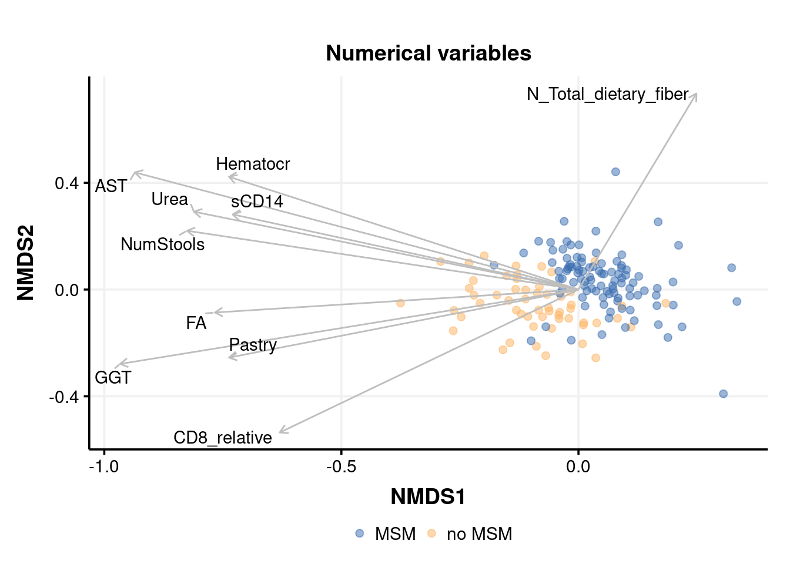
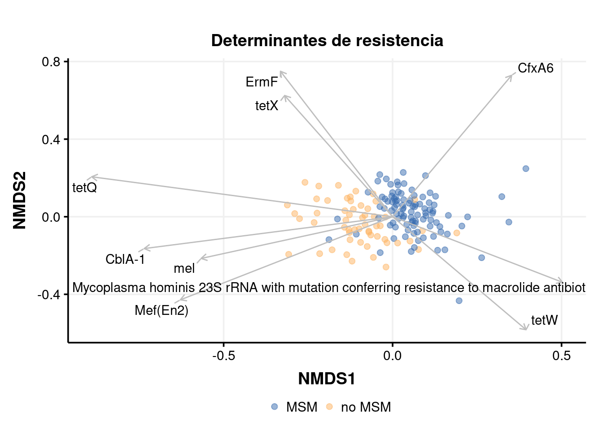
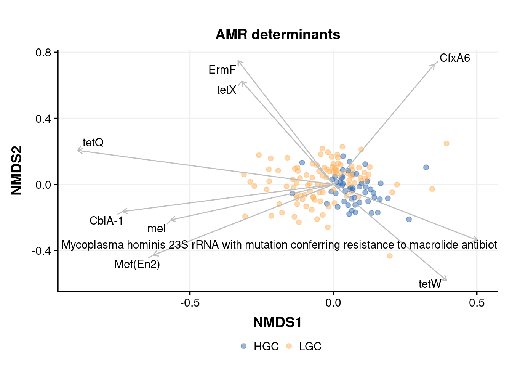
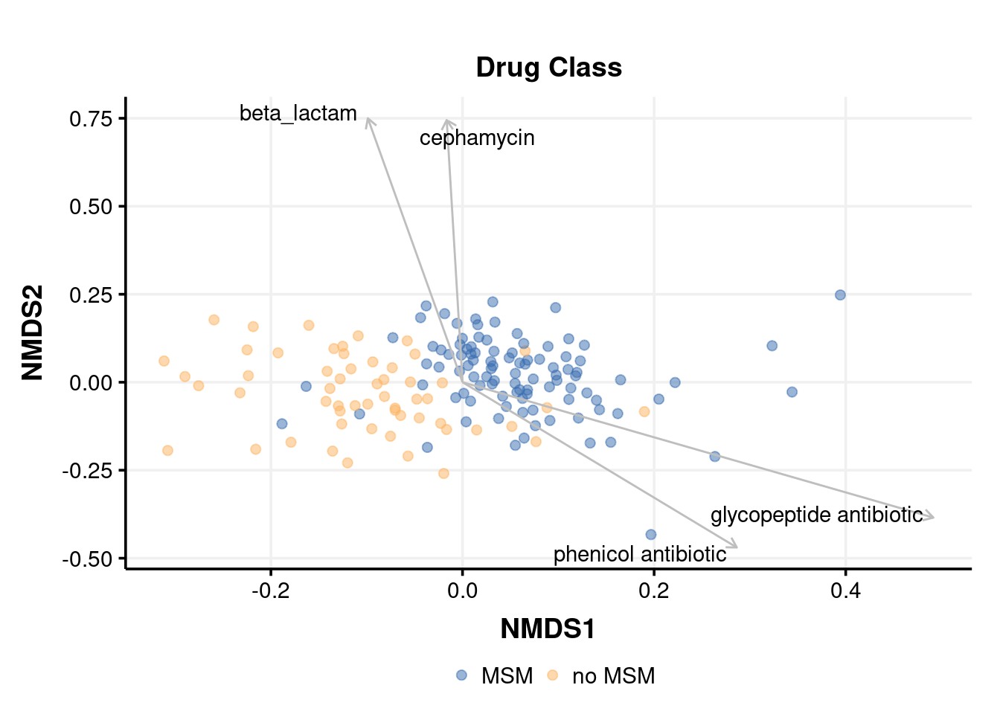
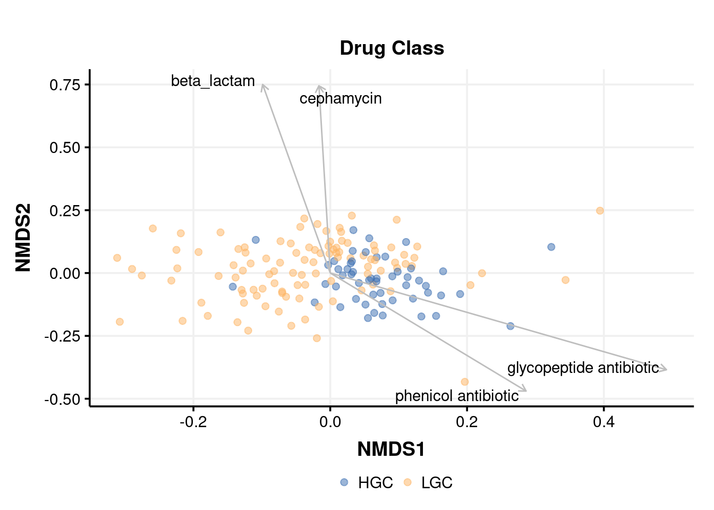
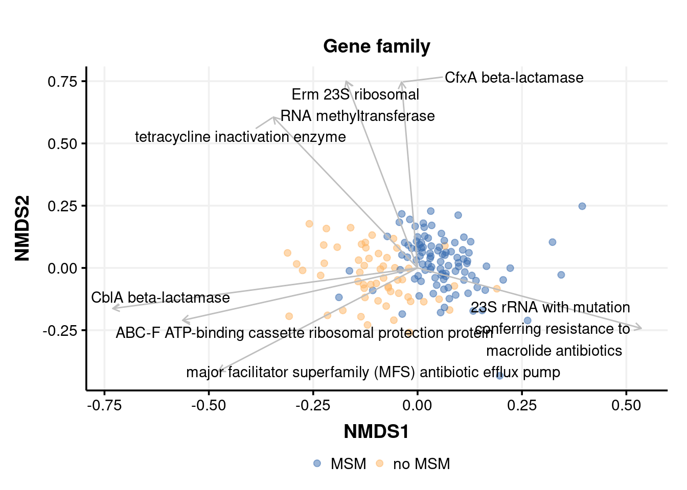
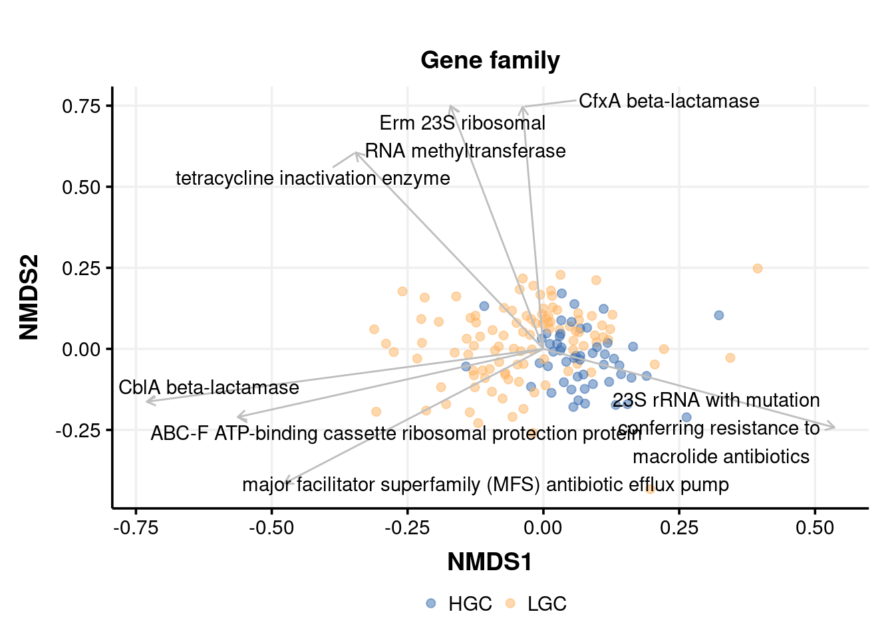

Last updated: 2023-04-24
Checks: 6 1
Knit directory: 2022_Rubio_MetaHIV/
This reproducible R Markdown analysis was created with workflowr (version 1.7.0). The Checks tab describes the reproducibility checks that were applied when the results were created. The Past versions tab lists the development history.
The R Markdown file has unstaged changes. To know which version of the R Markdown file created these results, you’ll want to first commit it to the Git repo. If you’re still working on the analysis, you can ignore this warning. When you’re finished, you can run wflow_publish to commit the R Markdown file and build the HTML.
Great job! The global environment was empty. Objects defined in the global environment can affect the analysis in your R Markdown file in unknown ways. For reproduciblity it’s best to always run the code in an empty environment.
The command set.seed(20220202) was run prior to running the code in the R Markdown file. Setting a seed ensures that any results that rely on randomness, e.g. subsampling or permutations, are reproducible.
Great job! Recording the operating system, R version, and package versions is critical for reproducibility.
Nice! There were no cached chunks for this analysis, so you can be confident that you successfully produced the results during this run.
Great job! Using relative paths to the files within your workflowr project makes it easier to run your code on other machines.
Great! You are using Git for version control. Tracking code development and connecting the code version to the results is critical for reproducibility.
The results in this page were generated with repository version 52a8f6c. See the Past versions tab to see a history of the changes made to the R Markdown and HTML files.
Note that you need to be careful to ensure that all relevant files for the analysis have been committed to Git prior to generating the results (you can use wflow_publish or wflow_git_commit). workflowr only checks the R Markdown file, but you know if there are other scripts or data files that it depends on. Below is the status of the Git repository when the results were generated:
Ignored files:
Ignored: .Rhistory
Ignored: .Rproj.user/
Ignored: analysis/.Rhistory
Ignored: output/aribaData/
Ignored: output/grootData/
Unstaged changes:
Modified: ECCMID_figures/alpha_div.tiff
Modified: ECCMID_figures/beta_div.tiff
Modified: analysis/07_biplots.Rmd
Modified: analysis/Riskgroup2_grouped.Rmd
Modified: output/ariba_dist.RDA
Modified: output/envfit_rpkm_amr_corlev2.csv
Modified: output/envfit_rpkm_meta_top10.csv
Modified: output/groot_dist.RDA
Modified: output/grouped_rpkm_ariba.RDA
Note that any generated files, e.g. HTML, png, CSS, etc., are not included in this status report because it is ok for generated content to have uncommitted changes.
These are the previous versions of the repository in which changes were made to the R Markdown (analysis/07_biplots.Rmd) and HTML (docs/07_biplots.html) files. If you’ve configured a remote Git repository (see ?wflow_git_remote), click on the hyperlinks in the table below to view the files as they were in that past version.
| File | Version | Author | Date | Message |
|---|---|---|---|---|
| Rmd | 03e7096 | Elisa_Linux | 2022-12-23 | wflowr page organization |
| html | 03e7096 | Elisa_Linux | 2022-12-23 | wflowr page organization |
library(tidyverse)
library(kableExtra)
library(vegan)
library(ggpubr)
library(glue)
library(patchwork)
library(ggthemes)
library(grid)
library(ggrepel)load("output/summarized_ariba.RDA")
load("output/ariba_dist.RDA")
load("output/grouped_rpkm_ariba.RDA")
load("output/grouped_refname_ariba.RDA")
source("code/functions.R")ART_groups<-c("concordant", "discordant ", "early_treated")
gene_richness<-read.delim2("data/Metadata/generichness_data.txt")%>%
select(SampleID, GCount)
metadata<-read_csv("data/Metadata/metadata.csv")%>%
mutate(ratio_CD4_CD8=CD4_absolute/CD8_absolute,
ART=ifelse(Profile %in% ART_groups, "TAR", "No TAR"),
MSM_dic=ifelse(RiskGroup2=="msm", "MSM", "no MSM"),
Profile=factor(Profile, levels = c("negative", "elite_controllers", "viremic_controllers",
"early_treated ", "concordant", "naive", "late_presenters",
"discordant")))%>%
inner_join(gene_richness, by="SampleID")set.seed(200889)
nmds_rpkm<-metaMDS(ariba_dist$dist_rpkm, trace = 0, trymax = 200)set.seed(200889)
cor_rpkm_meta<-corr_meta_envfit(metadata, nmds_rpkm)
cor_rpkm_meta%>%slice_max(r2, n=10)%>%
select(-NMDS1, -NMDS2)%>%
kable(caption="**Top 10 correlated Clinical variables with NMDS axes** (Ariba RPKM)")%>%kable_paper("striped")%>%scroll_box(width = "100%", height = "500px")| Variable | r2 | p.value |
|---|---|---|
| CD8_relative | 0.1944633 | 0.027 |
| AST | 0.1480166 | 0.091 |
| NumStools | 0.1466683 | 0.075 |
| N_Total_lipids | 0.1435697 | 0.063 |
| N_Energy | 0.1211026 | 0.109 |
| N_Monounsaturated_fats | 0.1169870 | 0.106 |
| N_Digestable_polysaccharides | 0.1144860 | 0.132 |
| N_VitamineE | 0.1103875 | 0.135 |
| N_Total_dietary_fiber | 0.1071685 | 0.151 |
| sCD14 | 0.1041457 | 0.148 |
top_n=10
cor_rpkm_meta_top10<-cor_rpkm_meta%>%slice_max(r2, n=top_n)
write_csv(cor_rpkm_meta_top10, "output/envfit_rpkm_meta_top10.csv")p1<-biplot_amr_envfit(cor_rpkm_meta_top10, nmds_rpkm, metadata, MSM_dic, Variable)+
labs(title = "Numerical variables")
p1
| Version | Author | Date |
|---|---|---|
| 03e7096 | Elisa_Linux | 2022-12-23 |
set.seed(200889)
cor_rpkm_amr<-corr_amr_envfit(ariba_rpkm, refname_all_ariba, nmds_rpkm)
cor_rpkm_amr%>%slice_max(r2, n=20)%>%select(`ARO Name`, r2, p.value, everything(), -NMDS1, -NMDS2)%>%
kable(caption="**Top 20 correlated AMR genes with NMDS axes** (Ariba RPKM)")%>%kable_paper("striped")%>%scroll_box(width = "100%", height = "500px")| ARO Name | r2 | p.value | ref_name | ARO Term | ARO Accession | NCBI | init_final | CVTERM ID | Protein Accession | DNA Accession | AMR Gene Family | Drug Class | Resistance Mechanism |
|---|---|---|---|---|---|---|---|---|---|---|---|---|---|
| tetQ | 0.5455094 | 0.001 | tetQ.3000191.Z21523.0_1974.476 | tetQ | 3000191 | Z21523 | 0_1974 | 36330 | CAA79727.1 | Z21523 | tetracycline-resistant ribosomal protection protein | tetracycline antibiotic | antibiotic target protection |
| ErmF | 0.4391406 | 0.001 | ErmF.3000498.M17124.1181_1982.593 | ErmF | 3000498 | M17124 | 1181_1982 | 36637 | AAA88675.1 | M17124 | Erm 23S ribosomal RNA methyltransferase | lincosamide antibiotic;macrolide antibiotic;streptogramin antibiotic | antibiotic target alteration |
| CfxA6 | 0.4281503 | 0.001 | CfxA6.3003097.GQ342996.797_1793.1744 | CfxA6 | 3003097 | GQ342996 | 797_1793 | 39650 | ACT97371.1 | GQ342996 | CfxA beta-lactamase | cephamycin | antibiotic inactivation |
| Mef(En2) | 0.3773270 | 0.001 | Mef_En2_.3004659.AF251288.1.794_2000.5539 | Mef_En2_ | 3004659 | AF251288 . 1 | 794_2000 | 42698 | AAF74725.1 | AF251288.1 | major facilitator superfamily (MFS) antibiotic efflux pump | macrolide antibiotic | antibiotic efflux |
| CblA-1 | 0.3703668 | 0.001 | CblA_1.3002999.GQ343019.132_1023.1188 | CblA_1 | 3002999 | GQ343019 | 132_1023 | 39433 | ACT97415.1 | GQ343019 | CblA beta-lactamase | cephalosporin | antibiotic inactivation |
| tetW | 0.3233425 | 0.001 | tetW.3000194.AJ222769.3.3686_5606.5145 | tetW | 3000194 | AJ222769 . 3 | 3686_5606 | 36333 | CAA10975.1 | AJ222769.3 | tetracycline-resistant ribosomal protection protein | tetracycline antibiotic | antibiotic target protection |
| tetX | 0.3217728 | 0.001 | tetX.3000205.M37699.585_1752.79 | tetX | 3000205 | M37699 | 585_1752 | 36344 | AAA27471.1 | M37699 | tetracycline inactivation enzyme | glycylcycline;tetracycline antibiotic | antibiotic inactivation |
| mel | 0.2398427 | 0.001 | mel.3000616.AF227521.1.3269_4487.5180 | mel | 3000616 | AF227521 . 1 | 3269_4487 | 36910 | AAL73129.1 | AF227521.1 | ABC-F ATP-binding cassette ribosomal protection protein | lincosamide antibiotic;macrolide antibiotic;oxazolidinone antibiotic;phenicol antibiotic;pleuromutilin antibiotic;streptogramin antibiotic;tetracycline antibiotic | antibiotic target protection |
| Mycoplasma hominis 23S rRNA with mutation conferring resistance to macrolide antibiotics | 0.2396492 | 0.001 | Mycoplasma_hominis_23S.3004176.CP011538.1.333282_336166.4166 | Mycoplasma_hominis_23S | 3004176 | CP011538 . 1 | 333282_336166 | 41327 | NA | CP011538.1 | 23S rRNA with mutation conferring resistance to macrolide antibiotics | glycopeptide antibiotic;lincosamide antibiotic;macrolide antibiotic;phenicol antibiotic;pleuromutilin antibiotic;streptogramin antibiotic | antibiotic target alteration |
| ErmG | 0.1900247 | 0.001 | ErmG.3000522.L42817.201_936.590 | ErmG | 3000522 | L42817 | 201_936 | 36661 | AAC37034.1 | L42817 | Erm 23S ribosomal RNA methyltransferase | lincosamide antibiotic;macrolide antibiotic;streptogramin antibiotic | antibiotic target alteration |
| CfxA2 | 0.1883382 | 0.001 | CfxA2.3003002.AF118110.1.71_1037.4470 | CfxA2 | 3003002 | AF118110 . 1 | 71_1037 | 39436 | AAD23513.1 | AF118110.1 | CfxA beta-lactamase | cephamycin | antibiotic inactivation |
| Chlamydomonas reinhardtii 16S rRNA (rrnS) mutation conferring resistance to streptomycin | 0.1859260 | 0.001 | rrnS.3003978.NC_005353.1.38549_40023.4108 | rrnS | 3003978 | NC_005353 . 1 | 38549_40023 | 40814 | NA | NC_005353.1 | 16s rRNA with mutation conferring resistance to aminoglycoside antibiotics | aminoglycoside antibiotic;glycopeptide antibiotic;glycylcycline;nucleoside antibiotic;peptide antibiotic;tetracycline antibiotic | antibiotic target alteration |
| sul2 | 0.1690349 | 0.001 | sul2.3000412.AY055428.1.20268_21084.4745 | sul2 | 3000412 | AY055428 . 1 | 20268_21084 | 36551 | AAL59753.1 | AY055428.1 | sulfonamide resistant sul | sulfonamide antibiotic;sulfone antibiotic | antibiotic target replacement |
| CfxA3 | 0.1581569 | 0.001 | CfxA3.3003003.AF472622.52_1018.1514 | CfxA3 | 3003003 | AF472622 | 52_1018 | 39437 | AAL79549.2 | AF472622 | CfxA beta-lactamase | cephamycin | antibiotic inactivation |
| aadS | 0.1551541 | 0.001 | aadS.3004683.M72415.1.1120_1984.5568 | aadS | 3004683 | M72415 . 1 | 1120_1984 | 42732 | AAA27459.1 | M72415.1 | ANT(6) | aminoglycoside antibiotic | antibiotic inactivation |
| Clostridioides difficile 23S rRNA with mutation conferring resistance to erythromycin and clindamycin | 0.1320680 | 0.001 | Clostridioides_difficile_23S.3004654.NR_076234.1.0_2900.5518 | Clostridioides_difficile_23S | 3004654 | NR_076234 . 1 | 0_2900 | 42686 | NA | NR_076234.1 | 23S rRNA with mutation conferring resistance to macrolide antibiotics | glycopeptide antibiotic;lincosamide antibiotic;macrolide antibiotic;phenicol antibiotic;pleuromutilin antibiotic;streptogramin antibiotic | antibiotic target alteration |
| Brachyspira hyodysenteriae 23S rRNA with mutation conferring resistance to tylosin | 0.1296320 | 0.001 | Brachyspira_hyodysenteriae_23S.3004133.NZ_CP015910.2.2512812_2515808.4183 | Brachyspira_hyodysenteriae_23S | 3004133 | NZ_CP015910 . 2 | 2512812_2515808 | 41260 | NA | NZ_CP015910.2 | 23S rRNA with mutation conferring resistance to macrolide antibiotics | glycopeptide antibiotic;lincosamide antibiotic;macrolide antibiotic;phenicol antibiotic;pleuromutilin antibiotic;streptogramin antibiotic | antibiotic target alteration |
| Campylobacter jejuni 23S rRNA with mutation conferring resistance to erythromycin | 0.1226732 | 0.002 | Campylobacter_jejuni_23S.3004546.NR_076226.1.0_2912.5105 | Campylobacter_jejuni_23S | 3004546 | NR_076226 . 1 | 0_2912 | 42445 | NA | NR_076226.1 | 23S rRNA with mutation conferring resistance to macrolide antibiotics | glycopeptide antibiotic;lincosamide antibiotic;macrolide antibiotic;phenicol antibiotic;pleuromutilin antibiotic;streptogramin antibiotic | antibiotic target alteration |
| lnuC | 0.1219716 | 0.001 | lnuC.3002837.AY928180.0_495.110 | lnuC | 3002837 | AY928180 | 0_495 | 39271 | AAY32951.1 | AY928180 | lincosamide nucleotidyltransferase (LNU) | lincosamide antibiotic | antibiotic inactivation |
| Escherichia coli ampC1 beta-lactamase | 0.1209141 | 0.001 | Escherichia_coli_ampC1.3004611.FN649414.1.2765050_2766355.5236 | Escherichia_coli_ampC1 | 3004611 | FN649414 . 1 | 2765050_2766355 | 42575 | CBJ02047.1 | FN649414.1 | ampC-type beta-lactamase | cephalosporin;penam | antibiotic inactivation |
cor_level<-0.2
cor_rpkm_amr_corlev2<-cor_rpkm_amr%>%filter(p.value<=0.05 & r2 > cor_level)
write_csv(cor_rpkm_amr_corlev2, "output/envfit_rpkm_amr_corlev2.csv")p2<-biplot_amr_envfit(cor_rpkm_amr_corlev2, nmds_rpkm, metadata, MSM_dic, `ARO Name`)+
labs(title = "Determinantes de resistencia")
p2
| Version | Author | Date |
|---|---|---|
| 03e7096 | Elisa_Linux | 2022-12-23 |
p2b<-biplot_amr_envfit(cor_rpkm_amr_corlev2, nmds_rpkm, metadata, GCount, `ARO Name`)+
labs(title = "AMR determinants")
p2b
| Version | Author | Date |
|---|---|---|
| 03e7096 | Elisa_Linux | 2022-12-23 |
set.seed(200889)
cor_rpkm_drugclass<-corr_group_envfit(data_group=ariba_rpkm_drugclass, refdata_group = refname_ariba_drugclass, nmds = nmds_rpkm)
cor_rpkm_drugclass%>%slice_max(r2, n=20)%>%select(group_name, r2, p.value, everything(), -NMDS1, -NMDS2)%>%
kable(caption="**Top 20 correlated drug classes with NMDS axes** (Ariba RPKM)")%>%kable_paper("striped")%>%scroll_box(width = "100%", height = "500px")| group_name | r2 | p.value | AMR Gene Family | ARO Name |
|---|---|---|---|---|
| beta_lactam | 0.3984176 | 0.001 | NA | NA |
| cephamycin | 0.3866653 | 0.001 | CfxA beta-lactamase;resistance-nodulation-cell division (RND) antibiotic efflux pump;ATP-binding cassette (ABC) antibiotic efflux pump;major facilitator superfamily (MFS) antibiotic efflux pump;General Bacterial Porin with reduced permeability to beta-lactams;Penicillin-binding protein mutations conferring resistance to beta-lactam antibiotics;ACT beta-lactamase;CMY beta-lactamase | CfxA2;CfxA6;CfxA3;AcrE;AcrF;AcrS;TolC;porin OmpC;Klebsiella aerogenes Omp36;Klebsiella pneumoniae OmpK35;Klebsiella pneumoniae OmpK36;Klebsiella pneumoniae OmpK37;OmpA;CfxA5;Escherichia coli soxS with mutation conferring antibiotic resistance;H-NS;Escherichia coli ompF with mutation conferring resistance to beta-lactam antibiotics;Streptococcus pneumoniae PBP2b conferring resistance to amoxicillin;ACT-17;marA;CfxA4;ACT-45;ACT-4;ACT-7;ACT-38;ACT-39;CMY-90;CMY-169 |
| glycopeptide antibiotic | 0.2712154 | 0.001 | 23S rRNA with mutation conferring resistance to macrolide antibiotics;16s rRNA with mutation conferring resistance to aminoglycoside antibiotics;23S rRNA with mutation conferring resistance to linezolid antibiotics;23S rRNA with mutation conferring resistance to streptogramins antibiotics;23S rRNA with mutation conferring resistance to pleuromutilin antibiotics;23S rRNA with mutation conferring resistance to oxazolidinone antibiotics;glycopeptide resistance gene cluster;vanW;16S rRNA with mutation conferring resistance to tetracycline derivatives;vancomycin-resistant beta prime subunit of RNA polymerase (rpoC);16s rRNA with mutation conferring resistance to peptide antibiotics;van ligase;vanT;vanXY;23s rRNA with mutation conferring resistance to aminoglycoside antibiotics;vanS | Clostridioides difficile 23S rRNA with mutation conferring resistance to erythromycin and clindamycin;Moraxella catarrhalis 23S rRNA with mutation conferring resistance to macrolide antibiotics;Mycobacteroides chelonae 16S rRNA mutation conferring resistance to neomycin;Mycoplasma hominis 23S rRNA with mutation conferring resistance to macrolide antibiotics;Neisseria gonorrhoeae 23S rRNA with mutation conferring resistance to azithromycin;Neisseria meningitidis 16S rRNA mutation conferring resistance to spectinomycin;Pasteurella multocida 16S rRNA mutation conferring resistance to spectinomycin;Staphylococcus aureus 23S rRNA with mutation conferring resistance to linezolid;Streptococcus pneumoniae 23S rRNA mutation conferring resistance to macrolides and streptogramins antibiotics;Thermus thermophilus 23s rRNA conferring resistance to pleuromutilin antibiotics;Chlamydomonas reinhardtii 16S rRNA (rrnS) mutation conferring resistance to streptomycin;Escherichia coli 16S rRNA (rrsH) mutation conferring resistance to spectinomycin;Campylobacter jejuni 23S rRNA with mutation conferring resistance to erythromycin;Chlamydia trachomatis 23S rRNA with mutation conferring resistance to macrolide antibiotics;Escherichia coli 23S rRNA with mutation conferring resistance to oxazolidinone antibiotics;Mycobacterium intracellulare 23S rRNA with mutation conferring resistance to azithromycin;vanWG;Helicobacter pylori 16S rRNA mutation conferring resistance to tetracycline;Cutibacterium acnes 16S rRNA mutation conferring resistance to tetracycline;Brachyspira hyodysenteriae 23S rRNA with mutation conferring resistance to tylosin;Chlamydophila psittaci 16S rRNA mutation conferring resistance to spectinomycin;Helicobacter pylori 23S rRNA with mutation conferring resistance to clarithromycin;Mycoplasma fermentans 23S rRNA with mutation conferring resistance to macrolide antibiotics;Streptomyces ambofaciens 23S rRNA with mutation conferring resistance to macrolide antibiotics;Clostridioides difficile rpoC with mutation conferring resistance to vancomycin;Escherichia coli 16S rRNA (rrsB) mutation conferring resistance to tetracycline;Salmonella enterica 16S rRNA (rrsD) mutation conferring resistance to spectinomycin;Mycoplasma genitalium 23S rRNA mutations confers resistance to fluoroquinolone and macrolide antibiotics;Escherichia coli 16S rRNA (rrsC) mutation conferring resistance to kasugamicin;Mycolicibacterium smegmatis 16S rRNA (rrsB) mutation conferring resistance to viomycin;Mycobacterium tuberculosis 16S rRNA mutation conferring resistance to capreomycin;Mycolicibacterium smegmatis 23S rRNA with mutation conferring resistance to clarithromycin;Mycolicibacterium smegmatis 16S rRNA (rrsB) mutation conferring resistance to hygromycin B;vanG;vanTG;vanXYG;Mycobacterium avium 23S rRNA with mutation conferring resistance to clarithromycin;Neisseria gonorrhoeae 16S rRNA mutation conferring resistance to spectinomycin;Mycoplasma gallisepticum 23S rRNA mutation conferring resistance to pleuromutilin antibiotics;Mycobacterium tuberculosis 23S rRNA mutation conferring resistance to capreomycin;Propionibacteria 23S rRNA with mutation conferring resistance to macrolide antibiotics;Mycobacteroides abscessus 23S rRNA with mutation conferring resistance to clarithromycin;Mycobacterium kansasii 23S rRNA with mutation conferring resistance to clarithromycin;Mycoplasma pneumoniae 23S rRNA mutation conferring resistance to erythromycin;Mycobacteroides chelonae 23S rRNA with mutation conferring resistance to clarithromycin;vanSD;Mycobacteroides abscessus 16S rRNA mutation conferring resistance to gentamicin;Chlamydomonas reinhardtii 23S rRNA with mutation conferring resistance to erythromycin |
| phenicol antibiotic | 0.2105561 | 0.001 | 23S rRNA with mutation conferring resistance to macrolide antibiotics;23S rRNA with mutation conferring resistance to linezolid antibiotics;23S rRNA with mutation conferring resistance to streptogramins antibiotics;23S rRNA with mutation conferring resistance to pleuromutilin antibiotics;ABC-F ATP-binding cassette ribosomal protection protein;23S rRNA with mutation conferring resistance to oxazolidinone antibiotics;chloramphenicol acetyltransferase (CAT);resistance-nodulation-cell division (RND) antibiotic efflux pump;ATP-binding cassette (ABC) antibiotic efflux pump;major facilitator superfamily (MFS) antibiotic efflux pump;General Bacterial Porin with reduced permeability to beta-lactams;23s rRNA with mutation conferring resistance to aminoglycoside antibiotics;Cfr 23S ribosomal RNA methyltransferase | Clostridioides difficile 23S rRNA with mutation conferring resistance to erythromycin and clindamycin;Moraxella catarrhalis 23S rRNA with mutation conferring resistance to macrolide antibiotics;Mycoplasma hominis 23S rRNA with mutation conferring resistance to macrolide antibiotics;Neisseria gonorrhoeae 23S rRNA with mutation conferring resistance to azithromycin;Staphylococcus aureus 23S rRNA with mutation conferring resistance to linezolid;Streptococcus pneumoniae 23S rRNA mutation conferring resistance to macrolides and streptogramins antibiotics;Thermus thermophilus 23s rRNA conferring resistance to pleuromutilin antibiotics;mel;Campylobacter jejuni 23S rRNA with mutation conferring resistance to erythromycin;Chlamydia trachomatis 23S rRNA with mutation conferring resistance to macrolide antibiotics;Escherichia coli 23S rRNA with mutation conferring resistance to oxazolidinone antibiotics;Campylobacter coli chloramphenicol acetyltransferase;Mycobacterium intracellulare 23S rRNA with mutation conferring resistance to azithromycin;Brachyspira hyodysenteriae 23S rRNA with mutation conferring resistance to tylosin;Helicobacter pylori 23S rRNA with mutation conferring resistance to clarithromycin;AcrS;Mycoplasma fermentans 23S rRNA with mutation conferring resistance to macrolide antibiotics;Streptomyces ambofaciens 23S rRNA with mutation conferring resistance to macrolide antibiotics;TolC;Escherichia coli acrA;acrB;Escherichia coli acrR with mutation conferring multidrug antibiotic resistance;Escherichia coli soxR with mutation conferring antibiotic resistance;Klebsiella pneumoniae acrA;Enterobacter cloacae acrA;Klebsiella pneumoniae acrR with mutation conferring multidrug antibiotic resistance;Klebsiella pneumoniae ramR mutants;Mycoplasma genitalium 23S rRNA mutations confers resistance to fluoroquinolone and macrolide antibiotics;catP;Escherichia coli soxS with mutation conferring antibiotic resistance;Mycolicibacterium smegmatis 23S rRNA with mutation conferring resistance to clarithromycin;msrC;Mycobacterium avium 23S rRNA with mutation conferring resistance to clarithromycin;Escherichia coli marR mutant conferring antibiotic resistance;mdtM;Mycoplasma gallisepticum 23S rRNA mutation conferring resistance to pleuromutilin antibiotics;catI;lsaA;Mycobacterium tuberculosis 23S rRNA mutation conferring resistance to capreomycin;Propionibacteria 23S rRNA with mutation conferring resistance to macrolide antibiotics;marA;Mycobacteroides abscessus 23S rRNA with mutation conferring resistance to clarithromycin;Mycobacterium kansasii 23S rRNA with mutation conferring resistance to clarithromycin;lsaE;Mycoplasma pneumoniae 23S rRNA mutation conferring resistance to erythromycin;Mycobacteroides chelonae 23S rRNA with mutation conferring resistance to clarithromycin;lsaC;Chlamydomonas reinhardtii 23S rRNA with mutation conferring resistance to erythromycin;eatAv;cfr(B);plasmid-encoded cat (pp-cat) |
| nucleoside antibiotic | 0.1863511 | 0.001 | 16s rRNA with mutation conferring resistance to aminoglycoside antibiotics;streptothricin acetyltransferase (SAT);16S rRNA with mutation conferring resistance to tetracycline derivatives;major facilitator superfamily (MFS) antibiotic efflux pump;16s rRNA with mutation conferring resistance to peptide antibiotics | Mycobacteroides chelonae 16S rRNA mutation conferring resistance to neomycin;Neisseria meningitidis 16S rRNA mutation conferring resistance to spectinomycin;Pasteurella multocida 16S rRNA mutation conferring resistance to spectinomycin;SAT-4;Chlamydomonas reinhardtii 16S rRNA (rrnS) mutation conferring resistance to streptomycin;Escherichia coli 16S rRNA (rrsH) mutation conferring resistance to spectinomycin;Helicobacter pylori 16S rRNA mutation conferring resistance to tetracycline;Cutibacterium acnes 16S rRNA mutation conferring resistance to tetracycline;Chlamydophila psittaci 16S rRNA mutation conferring resistance to spectinomycin;mdtN;mdtO;Escherichia coli 16S rRNA (rrsB) mutation conferring resistance to tetracycline;Salmonella enterica 16S rRNA (rrsD) mutation conferring resistance to spectinomycin;Escherichia coli 16S rRNA (rrsC) mutation conferring resistance to kasugamicin;Mycolicibacterium smegmatis 16S rRNA (rrsB) mutation conferring resistance to viomycin;Mycobacterium tuberculosis 16S rRNA mutation conferring resistance to capreomycin;Mycolicibacterium smegmatis 16S rRNA (rrsB) mutation conferring resistance to hygromycin B;Neisseria gonorrhoeae 16S rRNA mutation conferring resistance to spectinomycin;mdtM;mdtP;Mycobacteroides abscessus 16S rRNA mutation conferring resistance to gentamicin |
| streptogramin antibiotic | 0.1710386 | 0.001 | 23S rRNA with mutation conferring resistance to macrolide antibiotics;Erm 23S ribosomal RNA methyltransferase;23S rRNA with mutation conferring resistance to linezolid antibiotics;23S rRNA with mutation conferring resistance to streptogramins antibiotics;23S rRNA with mutation conferring resistance to pleuromutilin antibiotics;ABC-F ATP-binding cassette ribosomal protection protein;23S rRNA with mutation conferring resistance to oxazolidinone antibiotics;23s rRNA with mutation conferring resistance to aminoglycoside antibiotics;Cfr 23S ribosomal RNA methyltransferase | Clostridioides difficile 23S rRNA with mutation conferring resistance to erythromycin and clindamycin;ErmB;ErmF;ErmG;Moraxella catarrhalis 23S rRNA with mutation conferring resistance to macrolide antibiotics;Mycoplasma hominis 23S rRNA with mutation conferring resistance to macrolide antibiotics;Neisseria gonorrhoeae 23S rRNA with mutation conferring resistance to azithromycin;Staphylococcus aureus 23S rRNA with mutation conferring resistance to linezolid;Streptococcus pneumoniae 23S rRNA mutation conferring resistance to macrolides and streptogramins antibiotics;Thermus thermophilus 23s rRNA conferring resistance to pleuromutilin antibiotics;mel;Campylobacter jejuni 23S rRNA with mutation conferring resistance to erythromycin;Chlamydia trachomatis 23S rRNA with mutation conferring resistance to macrolide antibiotics;Escherichia coli 23S rRNA with mutation conferring resistance to oxazolidinone antibiotics;23S rRNA (adenine(2058)-N(6))-methyltransferase Erm(A);Mycobacterium intracellulare 23S rRNA with mutation conferring resistance to azithromycin;ErmX;Brachyspira hyodysenteriae 23S rRNA with mutation conferring resistance to tylosin;Helicobacter pylori 23S rRNA with mutation conferring resistance to clarithromycin;Mycoplasma fermentans 23S rRNA with mutation conferring resistance to macrolide antibiotics;Streptomyces ambofaciens 23S rRNA with mutation conferring resistance to macrolide antibiotics;Erm(49);Mycoplasma genitalium 23S rRNA mutations confers resistance to fluoroquinolone and macrolide antibiotics;Mycolicibacterium smegmatis 23S rRNA with mutation conferring resistance to clarithromycin;msrC;Mycobacterium avium 23S rRNA with mutation conferring resistance to clarithromycin;ErmQ;Mycoplasma gallisepticum 23S rRNA mutation conferring resistance to pleuromutilin antibiotics;lsaA;Mycobacterium tuberculosis 23S rRNA mutation conferring resistance to capreomycin;Propionibacteria 23S rRNA with mutation conferring resistance to macrolide antibiotics;Mycobacteroides abscessus 23S rRNA with mutation conferring resistance to clarithromycin;Mycobacterium kansasii 23S rRNA with mutation conferring resistance to clarithromycin;lsaE;Mycoplasma pneumoniae 23S rRNA mutation conferring resistance to erythromycin;Mycobacteroides chelonae 23S rRNA with mutation conferring resistance to clarithromycin;lsaC;Chlamydomonas reinhardtii 23S rRNA with mutation conferring resistance to erythromycin;eatAv;cfr(B) |
| pleuromutilin antibiotic | 0.1581720 | 0.001 | 23S rRNA with mutation conferring resistance to macrolide antibiotics;23S rRNA with mutation conferring resistance to linezolid antibiotics;23S rRNA with mutation conferring resistance to streptogramins antibiotics;23S rRNA with mutation conferring resistance to pleuromutilin antibiotics;ABC-F ATP-binding cassette ribosomal protection protein;23S rRNA with mutation conferring resistance to oxazolidinone antibiotics;23s rRNA with mutation conferring resistance to aminoglycoside antibiotics | Clostridioides difficile 23S rRNA with mutation conferring resistance to erythromycin and clindamycin;Moraxella catarrhalis 23S rRNA with mutation conferring resistance to macrolide antibiotics;Mycoplasma hominis 23S rRNA with mutation conferring resistance to macrolide antibiotics;Neisseria gonorrhoeae 23S rRNA with mutation conferring resistance to azithromycin;Staphylococcus aureus 23S rRNA with mutation conferring resistance to linezolid;Streptococcus pneumoniae 23S rRNA mutation conferring resistance to macrolides and streptogramins antibiotics;Thermus thermophilus 23s rRNA conferring resistance to pleuromutilin antibiotics;mel;Campylobacter jejuni 23S rRNA with mutation conferring resistance to erythromycin;Chlamydia trachomatis 23S rRNA with mutation conferring resistance to macrolide antibiotics;Escherichia coli 23S rRNA with mutation conferring resistance to oxazolidinone antibiotics;Mycobacterium intracellulare 23S rRNA with mutation conferring resistance to azithromycin;Brachyspira hyodysenteriae 23S rRNA with mutation conferring resistance to tylosin;Helicobacter pylori 23S rRNA with mutation conferring resistance to clarithromycin;Mycoplasma fermentans 23S rRNA with mutation conferring resistance to macrolide antibiotics;Streptomyces ambofaciens 23S rRNA with mutation conferring resistance to macrolide antibiotics;Mycoplasma genitalium 23S rRNA mutations confers resistance to fluoroquinolone and macrolide antibiotics;Mycolicibacterium smegmatis 23S rRNA with mutation conferring resistance to clarithromycin;msrC;Mycobacterium avium 23S rRNA with mutation conferring resistance to clarithromycin;Mycoplasma gallisepticum 23S rRNA mutation conferring resistance to pleuromutilin antibiotics;lsaA;Mycobacterium tuberculosis 23S rRNA mutation conferring resistance to capreomycin;Propionibacteria 23S rRNA with mutation conferring resistance to macrolide antibiotics;Mycobacteroides abscessus 23S rRNA with mutation conferring resistance to clarithromycin;Mycobacterium kansasii 23S rRNA with mutation conferring resistance to clarithromycin;lsaE;Mycoplasma pneumoniae 23S rRNA mutation conferring resistance to erythromycin;Mycobacteroides chelonae 23S rRNA with mutation conferring resistance to clarithromycin;lsaC;Chlamydomonas reinhardtii 23S rRNA with mutation conferring resistance to erythromycin;eatAv |
| macrolide antibiotic | 0.1456404 | 0.001 | 23S rRNA with mutation conferring resistance to macrolide antibiotics;Erm 23S ribosomal RNA methyltransferase;major facilitator superfamily (MFS) antibiotic efflux pump;23S rRNA with mutation conferring resistance to linezolid antibiotics;23S rRNA with mutation conferring resistance to streptogramins antibiotics;23S rRNA with mutation conferring resistance to pleuromutilin antibiotics;ABC-F ATP-binding cassette ribosomal protection protein;23S rRNA with mutation conferring resistance to oxazolidinone antibiotics;resistance-nodulation-cell division (RND) antibiotic efflux pump;ATP-binding cassette (ABC) antibiotic efflux pump;pmr phosphoethanolamine transferase;macrolide phosphotransferase (MPH);23s rRNA with mutation conferring resistance to aminoglycoside antibiotics;small multidrug resistance (SMR) antibiotic efflux pump;macrolide esterase | Clostridioides difficile 23S rRNA with mutation conferring resistance to erythromycin and clindamycin;ErmB;ErmF;ErmG;Mef(En2);Moraxella catarrhalis 23S rRNA with mutation conferring resistance to macrolide antibiotics;Mycoplasma hominis 23S rRNA with mutation conferring resistance to macrolide antibiotics;Neisseria gonorrhoeae 23S rRNA with mutation conferring resistance to azithromycin;Staphylococcus aureus 23S rRNA with mutation conferring resistance to linezolid;Streptococcus pneumoniae 23S rRNA mutation conferring resistance to macrolides and streptogramins antibiotics;Thermus thermophilus 23s rRNA conferring resistance to pleuromutilin antibiotics;mel;Campylobacter jejuni 23S rRNA with mutation conferring resistance to erythromycin;Chlamydia trachomatis 23S rRNA with mutation conferring resistance to macrolide antibiotics;Escherichia coli 23S rRNA with mutation conferring resistance to oxazolidinone antibiotics;23S rRNA (adenine(2058)-N(6))-methyltransferase Erm(A);Mycobacterium intracellulare 23S rRNA with mutation conferring resistance to azithromycin;ErmX;Brachyspira hyodysenteriae 23S rRNA with mutation conferring resistance to tylosin;Helicobacter pylori 23S rRNA with mutation conferring resistance to clarithromycin;CRP;Mycoplasma fermentans 23S rRNA with mutation conferring resistance to macrolide antibiotics;Streptomyces ambofaciens 23S rRNA with mutation conferring resistance to macrolide antibiotics;TolC;evgA;evgS;gadW;gadX;mdtE;mdtF;Erm(49);Klebsiella mutant PhoP conferring antibiotic resistance to colistin;Klebsiella pneumoniae KpnE;Klebsiella pneumoniae KpnF;Klebsiella pneumoniae KpnG;Mycoplasma genitalium 23S rRNA mutations confers resistance to fluoroquinolone and macrolide antibiotics;Mycolicibacterium smegmatis 23S rRNA with mutation conferring resistance to clarithromycin;mphA;efmA;msrC;Mycobacterium avium 23S rRNA with mutation conferring resistance to clarithromycin;ErmQ;H-NS;mgrB;Mycoplasma gallisepticum 23S rRNA mutation conferring resistance to pleuromutilin antibiotics;efrA;lsaA;Mycobacterium tuberculosis 23S rRNA mutation conferring resistance to capreomycin;Propionibacteria 23S rRNA with mutation conferring resistance to macrolide antibiotics;Mycobacteroides abscessus 23S rRNA with mutation conferring resistance to clarithromycin;Mycobacterium kansasii 23S rRNA with mutation conferring resistance to clarithromycin;lsaE;Mycoplasma pneumoniae 23S rRNA mutation conferring resistance to erythromycin;Mycobacteroides chelonae 23S rRNA with mutation conferring resistance to clarithromycin;lsaC;Escherichia coli emrE;Chlamydomonas reinhardtii 23S rRNA with mutation conferring resistance to erythromycin;EreD;eatAv;mef(B) |
| sulfonamide antibiotic | 0.1377459 | 0.001 | sulfonamide resistant sul;sulfonamide resistant dihydropteroate synthase folP | sul2;sul1;Escherichia coli folP with mutation conferring resistance to sulfonamides;sul3 |
| sulfone antibiotic | 0.1377459 | 0.001 | sulfonamide resistant sul;sulfonamide resistant dihydropteroate synthase folP | sul2;sul1;Escherichia coli folP with mutation conferring resistance to sulfonamides;sul3 |
| peptide antibiotic | 0.1298294 | 0.001 | 16s rRNA with mutation conferring resistance to aminoglycoside antibiotics;rifamycin-resistant beta-subunit of RNA polymerase (rpoB);16S rRNA with mutation conferring resistance to tetracycline derivatives;ATP-binding cassette (ABC) antibiotic efflux pump;major facilitator superfamily (MFS) antibiotic efflux pump;resistance-nodulation-cell division (RND) antibiotic efflux pump;pmr phosphoethanolamine transferase;MCR phosphoethanolamine transferase;16s rRNA with mutation conferring resistance to peptide antibiotics;daptomycin resistant cls;undecaprenyl pyrophosphate related proteins;daptomycin resistant YybT;daptomycin resistant gshF;daptomycin resistant liaF;daptomycin resistant liaR;daptomycin resistant liaS | Mycobacteroides chelonae 16S rRNA mutation conferring resistance to neomycin;Neisseria meningitidis 16S rRNA mutation conferring resistance to spectinomycin;Pasteurella multocida 16S rRNA mutation conferring resistance to spectinomycin;Bifidobacterium adolescentis rpoB mutants conferring resistance to rifampicin;Chlamydomonas reinhardtii 16S rRNA (rrnS) mutation conferring resistance to streptomycin;Escherichia coli 16S rRNA (rrsH) mutation conferring resistance to spectinomycin;Helicobacter pylori 16S rRNA mutation conferring resistance to tetracycline;Cutibacterium acnes 16S rRNA mutation conferring resistance to tetracycline;Chlamydophila psittaci 16S rRNA mutation conferring resistance to spectinomycin;TolC;eptA;Escherichia coli rpoB mutants conferring resistance to rifampicin;Escherichia coli 16S rRNA (rrsB) mutation conferring resistance to tetracycline;ugd;ArnT;Klebsiella mutant PhoP conferring antibiotic resistance to colistin;Klebsiella pneumoniae KpnE;Klebsiella pneumoniae KpnF;Klebsiella pneumoniae KpnG;LptD;MCR-9.1;eptB;Salmonella enterica 16S rRNA (rrsD) mutation conferring resistance to spectinomycin;YojI;Escherichia coli 16S rRNA (rrsC) mutation conferring resistance to kasugamicin;Mycolicibacterium smegmatis 16S rRNA (rrsB) mutation conferring resistance to viomycin;Mycobacterium tuberculosis 16S rRNA mutation conferring resistance to capreomycin;Mycolicibacterium smegmatis 16S rRNA (rrsB) mutation conferring resistance to hygromycin B;Enterococcus faecium cls conferring resistance to daptomycin;Neisseria gonorrhoeae 16S rRNA mutation conferring resistance to spectinomycin;bacA;PmrF;mgrB;Enterococcus faecalis YybT with mutation conferring daptomycin resistance;Enterococcus faecalis cls with mutation conferring resistance to daptomycin;Enterococcus faecalis gshF with mutation conferring daptomycin resistance;Enterococcus faecalis liaF mutant conferring daptomycin resistance;Enterococcus faecalis liaR mutant conferring daptomycin resistance;Enterococcus faecalis liaS mutant conferring daptomycin resistance;rpoB2;Mycobacteroides abscessus 16S rRNA mutation conferring resistance to gentamicin;Enterococcus faecium liaF mutant conferring daptomycin resistance;Enterococcus faecium liaR mutant conferring daptomycin resistance;Enterococcus faecium liaS mutant conferring daptomycin resistance |
| aminoglycoside antibiotic | 0.1214326 | 0.001 | APH(3’);16s rRNA with mutation conferring resistance to aminoglycoside antibiotics;ANT(6);ANT(3’‘);16S rRNA with mutation conferring resistance to tetracycline derivatives;APH(3’‘);APH(6);ATP-binding cassette (ABC) antibiotic efflux pump;major facilitator superfamily (MFS) antibiotic efflux pump;resistance-nodulation-cell division (RND) antibiotic efflux pump;AAC(6’);APH(2’’);16s rRNA with mutation conferring resistance to peptide antibiotics;MipA-interacting Protein;kdpDE;23s rRNA with mutation conferring resistance to aminoglycoside antibiotics;AAC(3);ANT(9);amp acetyltransferase;APH(4) | APH(3’)-IIIa;Mycobacteroides chelonae 16S rRNA mutation conferring resistance to neomycin;Neisseria meningitidis 16S rRNA mutation conferring resistance to spectinomycin;Pasteurella multocida 16S rRNA mutation conferring resistance to spectinomycin;Chlamydomonas reinhardtii 16S rRNA (rrnS) mutation conferring resistance to streptomycin;Escherichia coli 16S rRNA (rrsH) mutation conferring resistance to spectinomycin;ANT(6)-Ia;aadA24;aadS;Helicobacter pylori 16S rRNA mutation conferring resistance to tetracycline;Cutibacterium acnes 16S rRNA mutation conferring resistance to tetracycline;ANT(6)-Ib;Chlamydophila psittaci 16S rRNA mutation conferring resistance to spectinomycin;APH(3’‘)-Ib;APH(6)-Id;TolC;acrD;cpxA;Escherichia coli 16S rRNA (rrsB) mutation conferring resistance to tetracycline;AAC(6’)-Im;APH(2’‘)-IIa;Klebsiella pneumoniae KpnE;Klebsiella pneumoniae KpnF;Klebsiella pneumoniae KpnG;Salmonella enterica 16S rRNA (rrsD) mutation conferring resistance to spectinomycin;Escherichia coli 16S rRNA (rrsC) mutation conferring resistance to kasugamicin;Mycolicibacterium smegmatis 16S rRNA (rrsB) mutation conferring resistance to viomycin;Mycobacterium tuberculosis 16S rRNA mutation conferring resistance to capreomycin;AAC(6’)-Iih;Mycolicibacterium smegmatis 16S rRNA (rrsB) mutation conferring resistance to hygromycin B;Neisseria gonorrhoeae 16S rRNA mutation conferring resistance to spectinomycin;Escherichia coli mipA;baeR;baeS;kdpE;aadA2;aadA8;AAC(6’)-Ib7;aadA;Mycobacterium tuberculosis 23S rRNA mutation conferring resistance to capreomycin;aadA5;APH(2’‘)-IIIa;AAC(3)-IId;APH(3’)-Ia;APH(2’‘)-If;Mycobacteroides abscessus 16S rRNA mutation conferring resistance to gentamicin;AAC(6’)-Ie-APH(2’‘)-Ia;AAC(6’)-Ii;ANT(9)-Ia;apmA;APH(2’’)-Ig;AAC(3)-IV;APH(4)-Ia;aadA13;aadA17 |
| oxazolidinone antibiotic | 0.1110631 | 0.001 | 23S rRNA with mutation conferring resistance to linezolid antibiotics;ABC-F ATP-binding cassette ribosomal protection protein;23S rRNA with mutation conferring resistance to oxazolidinone antibiotics;ATP-binding cassette (ABC) antibiotic efflux pump;Cfr 23S ribosomal RNA methyltransferase | Staphylococcus aureus 23S rRNA with mutation conferring resistance to linezolid;mel;Escherichia coli 23S rRNA with mutation conferring resistance to oxazolidinone antibiotics;mlaD;mlaF;msrC;lsaA;lsaE;lsaC;eatAv;cfr(B) |
| tetracycline antibiotic | 0.0785191 | 0.003 | 16s rRNA with mutation conferring resistance to aminoglycoside antibiotics;ABC-F ATP-binding cassette ribosomal protection protein;tetracycline-resistant ribosomal protection protein;tetracycline inactivation enzyme;major facilitator superfamily (MFS) antibiotic efflux pump;16S rRNA with mutation conferring resistance to tetracycline derivatives;ATP-binding cassette (ABC) antibiotic efflux pump;resistance-nodulation-cell division (RND) antibiotic efflux pump;16s rRNA with mutation conferring resistance to peptide antibiotics;General Bacterial Porin with reduced permeability to beta-lactams;Sugar Porin (SP) | Mycobacteroides chelonae 16S rRNA mutation conferring resistance to neomycin;Neisseria meningitidis 16S rRNA mutation conferring resistance to spectinomycin;Pasteurella multocida 16S rRNA mutation conferring resistance to spectinomycin;mel;Chlamydomonas reinhardtii 16S rRNA (rrnS) mutation conferring resistance to streptomycin;Escherichia coli 16S rRNA (rrsH) mutation conferring resistance to spectinomycin;tet32;tetO;tetQ;tetW;tetX;tet(40);Tet(X4);tetM;tet(44);Helicobacter pylori 16S rRNA mutation conferring resistance to tetracycline;Cutibacterium acnes 16S rRNA mutation conferring resistance to tetracycline;Chlamydophila psittaci 16S rRNA mutation conferring resistance to spectinomycin;Tet(X1);tetA(46);tetB(46);tetB(P);AcrS;TolC;Escherichia coli acrA;acrB;Escherichia coli acrR with mutation conferring multidrug antibiotic resistance;emrK;evgA;evgS;Escherichia coli 16S rRNA (rrsB) mutation conferring resistance to tetracycline;Escherichia coli soxR with mutation conferring antibiotic resistance;Klebsiella pneumoniae KpnE;Klebsiella pneumoniae KpnF;Klebsiella pneumoniae acrA;Enterobacter cloacae acrA;Klebsiella pneumoniae acrR with mutation conferring multidrug antibiotic resistance;oqxA;oqxB;Klebsiella pneumoniae ramR mutants;Salmonella enterica 16S rRNA (rrsD) mutation conferring resistance to spectinomycin;tet(A);Escherichia coli 16S rRNA (rrsC) mutation conferring resistance to kasugamicin;Escherichia coli mdfA;Mycolicibacterium smegmatis 16S rRNA (rrsB) mutation conferring resistance to viomycin;Escherichia coli soxS with mutation conferring antibiotic resistance;tetR;Mycobacterium tuberculosis 16S rRNA mutation conferring resistance to capreomycin;tetA(P);Mycolicibacterium smegmatis 16S rRNA (rrsB) mutation conferring resistance to hygromycin B;msrC;Neisseria gonorrhoeae 16S rRNA mutation conferring resistance to spectinomycin;tet(C);tet(W/N/W);Escherichia coli LamB;H-NS;emrY;Escherichia coli marR mutant conferring antibiotic resistance;lsaA;marA;tetS;lsaE;lsaC;tet36;Mycobacteroides abscessus 16S rRNA mutation conferring resistance to gentamicin;tet(B);eatAv;tet(L);tet(D);Tet(X6) |
| benzalkonium chloride | 0.0664450 | 0.011 | major facilitator superfamily (MFS) antibiotic efflux pump | Escherichia coli mdfA |
| rhodamine | 0.0664450 | 0.011 | major facilitator superfamily (MFS) antibiotic efflux pump | Escherichia coli mdfA |
| glycylcycline | 0.0536533 | 0.022 | 16s rRNA with mutation conferring resistance to aminoglycoside antibiotics;tetracycline inactivation enzyme;16S rRNA with mutation conferring resistance to tetracycline derivatives;resistance-nodulation-cell division (RND) antibiotic efflux pump;ATP-binding cassette (ABC) antibiotic efflux pump;major facilitator superfamily (MFS) antibiotic efflux pump;16s rRNA with mutation conferring resistance to peptide antibiotics;General Bacterial Porin with reduced permeability to beta-lactams | Mycobacteroides chelonae 16S rRNA mutation conferring resistance to neomycin;Neisseria meningitidis 16S rRNA mutation conferring resistance to spectinomycin;Pasteurella multocida 16S rRNA mutation conferring resistance to spectinomycin;Chlamydomonas reinhardtii 16S rRNA (rrnS) mutation conferring resistance to streptomycin;Escherichia coli 16S rRNA (rrsH) mutation conferring resistance to spectinomycin;tetX;Tet(X4);Helicobacter pylori 16S rRNA mutation conferring resistance to tetracycline;Cutibacterium acnes 16S rRNA mutation conferring resistance to tetracycline;Chlamydophila psittaci 16S rRNA mutation conferring resistance to spectinomycin;AcrS;TolC;Escherichia coli acrA;acrB;Escherichia coli acrR with mutation conferring multidrug antibiotic resistance;Escherichia coli 16S rRNA (rrsB) mutation conferring resistance to tetracycline;Escherichia coli soxR with mutation conferring antibiotic resistance;Klebsiella pneumoniae acrA;Enterobacter cloacae acrA;Klebsiella pneumoniae acrR with mutation conferring multidrug antibiotic resistance;oqxA;oqxB;Klebsiella pneumoniae ramR mutants;Salmonella enterica 16S rRNA (rrsD) mutation conferring resistance to spectinomycin;Escherichia coli 16S rRNA (rrsC) mutation conferring resistance to kasugamicin;Mycolicibacterium smegmatis 16S rRNA (rrsB) mutation conferring resistance to viomycin;Escherichia coli soxS with mutation conferring antibiotic resistance;Mycobacterium tuberculosis 16S rRNA mutation conferring resistance to capreomycin;Mycolicibacterium smegmatis 16S rRNA (rrsB) mutation conferring resistance to hygromycin B;Neisseria gonorrhoeae 16S rRNA mutation conferring resistance to spectinomycin;Escherichia coli marR mutant conferring antibiotic resistance;marA;Mycobacteroides abscessus 16S rRNA mutation conferring resistance to gentamicin |
| nitroimidazole antibiotic | 0.0524226 | 0.022 | ATP-binding cassette (ABC) antibiotic efflux pump | msbA |
| cephalosporin | 0.0518695 | 0.015 | CblA beta-lactamase;ACI beta-lactamase;OXA beta-lactamase;resistance-nodulation-cell division (RND) antibiotic efflux pump;CTX-M beta-lactamase;cepA beta-lactamase;EC beta-lactamase;ATP-binding cassette (ABC) antibiotic efflux pump;major facilitator superfamily (MFS) antibiotic efflux pump;ampC-type beta-lactamase;General Bacterial Porin with reduced permeability to beta-lactams;ACC beta-lactamase;SHV beta-lactamase;TEM beta-lactamase;Penicillin-binding protein mutations conferring resistance to beta-lactam antibiotics;ACT beta-lactamase | CblA-1;ACI-1;OXA-660;AcrE;AcrF;AcrS;CTX-M-88;CepA-44;EC-5;OXA-347;TolC;Escherichia coli acrA;acrB;Escherichia coli acrR with mutation conferring multidrug antibiotic resistance;Escherichia coli ampH beta-lactamase;porin OmpC;Escherichia coli soxR with mutation conferring antibiotic resistance;ACC-1d;Klebsiella aerogenes Omp36;Klebsiella pneumoniae KpnE;Klebsiella pneumoniae KpnF;Klebsiella pneumoniae KpnG;Klebsiella pneumoniae OmpK35;Klebsiella pneumoniae OmpK36;Klebsiella pneumoniae OmpK37;OmpA;SHV-100;Klebsiella pneumoniae acrA;Enterobacter cloacae acrA;Klebsiella pneumoniae acrR with mutation conferring multidrug antibiotic resistance;Klebsiella pneumoniae ramR mutants;TEM-124;TEM-37;cepA;Escherichia coli soxS with mutation conferring antibiotic resistance;CepA-29;H-NS;Escherichia coli marR mutant conferring antibiotic resistance;Escherichia coli ompF with mutation conferring resistance to beta-lactam antibiotics;Streptococcus pneumoniae PBP2b conferring resistance to amoxicillin;ACT-17;EC-15;Escherichia coli ampC1 beta-lactamase;marA;CepA-49;ACC-1;OXA-63;TEM-82;OXA-471;TEM-93;EC-8;TEM-95;TEM-34;OXA-472;Escherichia coli ampC beta-lactamase;OXA-786;ACT-45;EC-16;ACT-4;ACT-7;TEM-187;TEM-90;ACT-38;ACT-39;SHV-70;EC-19;TEM-40 |
| aminocoumarin antibiotic | 0.0507978 | 0.022 | ATP-binding cassette (ABC) antibiotic efflux pump;major facilitator superfamily (MFS) antibiotic efflux pump;resistance-nodulation-cell division (RND) antibiotic efflux pump;aminocoumarin resistant gyrB;fluoroquinolone resistant gyrB | TolC;cpxA;Escherichia coli gyrB conferring resistance to aminocoumarin;mdtB;LptD;Salmonella serovars gyrB conferring resistance to fluoroquinolones;baeR;baeS;mdtA;mdtC |
cor_level<-0.2
cor_rpkm_drugclass_corlev2<-cor_rpkm_drugclass%>%filter(p.value<=0.05 & r2 > cor_level)
write_csv(cor_rpkm_drugclass_corlev2, "output/envfit_rpkm_drugclass_corlev2.csv")p3<-biplot_amr_envfit(cor_rpkm_drugclass_corlev2, nmds_rpkm, metadata, MSM_dic, group_name)+
labs(title = "Drug Class")+theme(legend.title = element_blank())
p3
| Version | Author | Date |
|---|---|---|
| 03e7096 | Elisa_Linux | 2022-12-23 |
p3b<-biplot_amr_envfit(cor_rpkm_drugclass_corlev2, nmds_rpkm, metadata, GCount, group_name)+
labs(title = "Drug Class")+theme(legend.title = element_blank())
p3b
| Version | Author | Date |
|---|---|---|
| 03e7096 | Elisa_Linux | 2022-12-23 |
set.seed(200889)
cor_rpkm_genefamily<-corr_group_envfit(data_group=ariba_rpkm_genefamily, refdata_group = refname_ariba_genefamily, nmds = nmds_rpkm)
cor_rpkm_genefamily%>%slice_max(r2, n=20)%>%select(group_name, r2, p.value, everything(), -NMDS1, -NMDS2)%>%
kable(caption="**Top 20 correlated gene families with NMDS axes** (Ariba RPKM)")%>%kable_paper("striped")%>%scroll_box(width = "100%", height = "500px")| group_name | r2 | p.value | ARO Name | Drug Class |
|---|---|---|---|---|
| Erm 23S ribosomal RNA methyltransferase | 0.3915245 | 0.001 | ErmB;ErmF;ErmG;23S rRNA (adenine(2058)-N(6))-methyltransferase Erm(A);ErmX;Erm(49);ErmQ | lincosamide antibiotic;macrolide antibiotic;streptogramin antibiotic |
| CblA beta-lactamase | 0.3703668 | 0.001 | CblA-1 | cephalosporin |
| CfxA beta-lactamase | 0.3695383 | 0.001 | CfxA2;CfxA6;CfxA3;CfxA5;CfxA4 | cephamycin |
| tetracycline inactivation enzyme | 0.3218914 | 0.001 | tetX;Tet(X4);Tet(X1);Tet(X6) | glycylcycline;tetracycline antibiotic |
| major facilitator superfamily (MFS) antibiotic efflux pump | 0.2642099 | 0.001 | Mef(En2);tet(40);emrA;emrK;mdtN;mdtO;Klebsiella pneumoniae KpnE;Klebsiella pneumoniae KpnF;Klebsiella pneumoniae KpnG;tet(A);Escherichia coli mdfA;tetR;tetA(P);efmA;qacE;tet(C);emrB;emrR;emrY;mdtG;mdtH;mdtM;mdtP;qacEdelta1;tet(B);mef(B);tet(L);tet(D) | macrolide antibiotic;tetracycline antibiotic;fluoroquinolone antibiotic;acridine dye;disinfecting agents and intercalating dyes;nucleoside antibiotic;aminoglycoside antibiotic;cephalosporin;peptide antibiotic;rifamycin antibiotic;carbapenem;penam;penem;benzalkonium chloride;rhodamine;fosfomycin;lincosamide antibiotic;phenicol antibiotic |
| ABC-F ATP-binding cassette ribosomal protection protein | 0.2389307 | 0.001 | mel;msrC;lsaA;lsaE;lsaC;eatAv | lincosamide antibiotic;macrolide antibiotic;oxazolidinone antibiotic;phenicol antibiotic;pleuromutilin antibiotic;streptogramin antibiotic;tetracycline antibiotic |
| 23S rRNA with mutation conferring resistance to macrolide antibiotics | 0.2287805 | 0.001 | Clostridioides difficile 23S rRNA with mutation conferring resistance to erythromycin and clindamycin;Moraxella catarrhalis 23S rRNA with mutation conferring resistance to macrolide antibiotics;Mycoplasma hominis 23S rRNA with mutation conferring resistance to macrolide antibiotics;Neisseria gonorrhoeae 23S rRNA with mutation conferring resistance to azithromycin;Campylobacter jejuni 23S rRNA with mutation conferring resistance to erythromycin;Chlamydia trachomatis 23S rRNA with mutation conferring resistance to macrolide antibiotics;Mycobacterium intracellulare 23S rRNA with mutation conferring resistance to azithromycin;Brachyspira hyodysenteriae 23S rRNA with mutation conferring resistance to tylosin;Helicobacter pylori 23S rRNA with mutation conferring resistance to clarithromycin;Mycoplasma fermentans 23S rRNA with mutation conferring resistance to macrolide antibiotics;Streptomyces ambofaciens 23S rRNA with mutation conferring resistance to macrolide antibiotics;Mycoplasma genitalium 23S rRNA mutations confers resistance to fluoroquinolone and macrolide antibiotics;Mycolicibacterium smegmatis 23S rRNA with mutation conferring resistance to clarithromycin;Mycobacterium avium 23S rRNA with mutation conferring resistance to clarithromycin;Propionibacteria 23S rRNA with mutation conferring resistance to macrolide antibiotics;Mycobacteroides abscessus 23S rRNA with mutation conferring resistance to clarithromycin;Mycobacterium kansasii 23S rRNA with mutation conferring resistance to clarithromycin;Mycoplasma pneumoniae 23S rRNA mutation conferring resistance to erythromycin;Mycobacteroides chelonae 23S rRNA with mutation conferring resistance to clarithromycin;Chlamydomonas reinhardtii 23S rRNA with mutation conferring resistance to erythromycin | glycopeptide antibiotic;lincosamide antibiotic;macrolide antibiotic;phenicol antibiotic;pleuromutilin antibiotic;streptogramin antibiotic |
| sulfonamide resistant sul | 0.1877214 | 0.001 | sul2;sul1;sul3 | sulfonamide antibiotic;sulfone antibiotic |
| tetracycline-resistant ribosomal protection protein | 0.1621875 | 0.001 | tet32;tetO;tetQ;tetW;tetM;tet(44);tetB(P);tet(W/N/W);tetS;tet36 | tetracycline antibiotic |
| ANT(6) | 0.1521280 | 0.001 | ANT(6)-Ia;aadS;ANT(6)-Ib | aminoglycoside antibiotic |
| lincosamide nucleotidyltransferase (LNU) | 0.1212425 | 0.001 | lnuC;LnuP | lincosamide antibiotic |
| 16s rRNA with mutation conferring resistance to aminoglycoside antibiotics | 0.1179103 | 0.001 | Mycobacteroides chelonae 16S rRNA mutation conferring resistance to neomycin;Neisseria meningitidis 16S rRNA mutation conferring resistance to spectinomycin;Pasteurella multocida 16S rRNA mutation conferring resistance to spectinomycin;Chlamydomonas reinhardtii 16S rRNA (rrnS) mutation conferring resistance to streptomycin;Escherichia coli 16S rRNA (rrsH) mutation conferring resistance to spectinomycin;Chlamydophila psittaci 16S rRNA mutation conferring resistance to spectinomycin;Salmonella enterica 16S rRNA (rrsD) mutation conferring resistance to spectinomycin;Escherichia coli 16S rRNA (rrsC) mutation conferring resistance to kasugamicin;Mycobacterium tuberculosis 16S rRNA mutation conferring resistance to capreomycin;Mycolicibacterium smegmatis 16S rRNA (rrsB) mutation conferring resistance to hygromycin B;Neisseria gonorrhoeae 16S rRNA mutation conferring resistance to spectinomycin;Mycobacteroides abscessus 16S rRNA mutation conferring resistance to gentamicin | aminoglycoside antibiotic;glycopeptide antibiotic;glycylcycline;nucleoside antibiotic;peptide antibiotic;tetracycline antibiotic |
| triclosan resistant gyrA | 0.1072847 | 0.001 | Escherichia coli gyrA with mutation conferring resistance to triclosan;Salmonella enterica gyrA with mutation conferring resistance to triclosan | triclosan |
| APH(3’’) | 0.0957825 | 0.003 | APH(3’’)-Ib | aminoglycoside antibiotic |
| APH(6) | 0.0925043 | 0.004 | APH(6)-Id | aminoglycoside antibiotic |
| ampC-type beta-lactamase | 0.0921643 | 0.002 | Escherichia coli ampH beta-lactamase;Escherichia coli ampC1 beta-lactamase;Escherichia coli ampC beta-lactamase | cephalosporin;penam |
| 23S rRNA with mutation conferring resistance to linezolid antibiotics | 0.0807610 | 0.001 | Staphylococcus aureus 23S rRNA with mutation conferring resistance to linezolid | glycopeptide antibiotic;lincosamide antibiotic;macrolide antibiotic;oxazolidinone antibiotic;phenicol antibiotic;pleuromutilin antibiotic;streptogramin antibiotic |
| small multidrug resistance (SMR) antibiotic efflux pump | 0.0727508 | 0.010 | Escherichia coli emrE | macrolide antibiotic |
| kdpDE | 0.0715350 | 0.007 | kdpE | aminoglycoside antibiotic |
| ANT(3’’) | 0.0705560 | 0.004 | aadA24;aadA2;aadA8;aadA;aadA5;aadA13;aadA17 | aminoglycoside antibiotic |
cor_level<-0.2
cor_rpkm_genefamily_corlev2<-cor_rpkm_genefamily%>%filter(p.value<=0.05 & r2 > cor_level)
write_csv(cor_rpkm_genefamily_corlev2, "output/envfit_rpkm_genefamily_corlev2.csv")cor_rpkm_genefamily_corlev<-cor_rpkm_genefamily_corlev2%>%
mutate(group_name = replace(group_name, group_name == "23S rRNA with mutation conferring resistance to macrolide antibiotics", "23S rRNA with mutation \n conferring resistance to \n macrolide antibiotics"),
group_name = replace(group_name, group_name=="Erm 23S ribosomal RNA methyltransferase", "Erm 23S ribosomal \nRNA methyltransferase" ))
p4<-biplot_amr_envfit(cor_rpkm_genefamily_corlev, nmds_rpkm, metadata, MSM_dic, group_name)+
labs(title = "Gene family")+theme(legend.title = element_blank())
p4
| Version | Author | Date |
|---|---|---|
| 03e7096 | Elisa_Linux | 2022-12-23 |
p4b<-biplot_amr_envfit(cor_rpkm_genefamily_corlev, nmds_rpkm, metadata, GCount, group_name)+
labs(title = "Gene family")+theme(legend.title = element_blank())
p4b
| Version | Author | Date |
|---|---|---|
| 03e7096 | Elisa_Linux | 2022-12-23 |
sessionInfo()R version 4.1.2 (2021-11-01)
Platform: x86_64-pc-linux-gnu (64-bit)
Running under: Ubuntu 20.04.3 LTS
Matrix products: default
BLAS: /usr/lib/x86_64-linux-gnu/blas/libblas.so.3.9.0
LAPACK: /usr/lib/x86_64-linux-gnu/lapack/liblapack.so.3.9.0
locale:
[1] LC_CTYPE=es_ES.UTF-8 LC_NUMERIC=C
[3] LC_TIME=es_ES.UTF-8 LC_COLLATE=es_ES.UTF-8
[5] LC_MONETARY=es_ES.UTF-8 LC_MESSAGES=es_ES.UTF-8
[7] LC_PAPER=es_ES.UTF-8 LC_NAME=C
[9] LC_ADDRESS=C LC_TELEPHONE=C
[11] LC_MEASUREMENT=es_ES.UTF-8 LC_IDENTIFICATION=C
attached base packages:
[1] grid stats graphics grDevices utils datasets methods
[8] base
other attached packages:
[1] scales_1.2.1 ggrepel_0.9.1 ggthemes_4.2.4 patchwork_1.1.1
[5] glue_1.6.2 ggpubr_0.4.0 vegan_2.5-7 lattice_0.20-45
[9] permute_0.9-7 kableExtra_1.3.4 forcats_0.5.1 stringr_1.4.0
[13] dplyr_1.0.8 purrr_0.3.4 readr_2.1.2 tidyr_1.2.0
[17] tibble_3.1.6 ggplot2_3.3.5 tidyverse_1.3.1
loaded via a namespace (and not attached):
[1] nlme_3.1-157 fs_1.5.2 bit64_4.0.5 lubridate_1.8.0
[5] webshot_0.5.2 httr_1.4.2 rprojroot_2.0.2 tools_4.1.2
[9] backports_1.4.1 bslib_0.3.1 utf8_1.2.2 R6_2.5.1
[13] DBI_1.1.2 mgcv_1.8-38 colorspace_2.0-3 withr_2.5.0
[17] tidyselect_1.1.2 bit_4.0.4 compiler_4.1.2 git2r_0.30.1
[21] cli_3.3.0 rvest_1.0.2 xml2_1.3.3 labeling_0.4.2
[25] sass_0.4.1 systemfonts_1.0.4 digest_0.6.29 rmarkdown_2.13
[29] svglite_2.1.0 pkgconfig_2.0.3 htmltools_0.5.2 highr_0.9
[33] dbplyr_2.1.1 fastmap_1.1.0 rlang_1.0.2 readxl_1.3.1
[37] rstudioapi_0.13 farver_2.1.0 jquerylib_0.1.4 generics_0.1.2
[41] jsonlite_1.8.0 vroom_1.5.7 car_3.0-12 magrittr_2.0.2
[45] Matrix_1.4-0 Rcpp_1.0.8.3 munsell_0.5.0 fansi_1.0.3
[49] abind_1.4-5 lifecycle_1.0.1 stringi_1.7.6 whisker_0.4
[53] yaml_2.3.5 carData_3.0-5 MASS_7.3-56 parallel_4.1.2
[57] promises_1.2.0.1 crayon_1.5.1 haven_2.4.3 splines_4.1.2
[61] hms_1.1.1 knitr_1.38 pillar_1.7.0 ggsignif_0.6.3
[65] reprex_2.0.1 evaluate_0.15 modelr_0.1.8 vctrs_0.3.8
[69] tzdb_0.2.0 httpuv_1.6.5 cellranger_1.1.0 gtable_0.3.0
[73] assertthat_0.2.1 xfun_0.30 broom_1.0.1 rstatix_0.7.0
[77] later_1.3.0 viridisLite_0.4.0 workflowr_1.7.0 cluster_2.1.2
[81] ellipsis_0.3.2